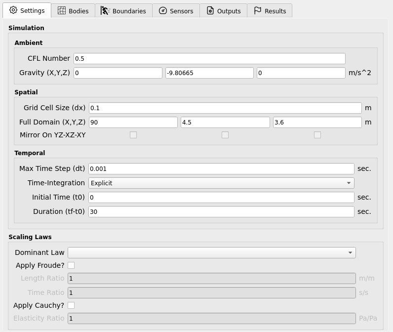

Settings
Global (solver-wide) settings for ClaymoreUW that are not specific to any body, boundary, or sensor are collected here. They are grouped into:
Simulation Settings (Ambient, Spatial, Temporal)
Scaling Settings
Computer Settings (Deprecated)
{kind=link}

Simulation Settings
General solver controls that govern stability, accuracy, and runtime.
Ambient
Parameters that ambiently affect the entire simulation (not tied to space/time discretization).
Parameter |
Description |
Typical / Notes |
|---|---|---|
CFL Number |
Courant–Friedrichs–Lewy stability number used by the material models to compute a stable time step. |
Keep in 0.3–0.5 for robust runs. |
Gravity (vector) |
Uniform acceleration applied globally. |
Example: |
Important
A lower CFL yields more conservative (smaller) time steps → more stable but slower. A higher CFL approaches the stability limit and risks divergence.
Spatial
Parameters defining the computational grid and domain.
Parameter |
Description |
Typical / Notes |
|---|---|---|
Grid-Cell Size (dx) |
MPM background grid spacing. Directly impacts accuracy and cost
(smaller |
Choose to adequately resolve features of interest. |
Domain (vector / bbox) |
Bounding box of the computational domain (full extent). |
Ensure all bodies and boundary motions remain inside for full duration. |
Mirror (Deprecated) |
Legacy symmetry mirroring across coordinate planes for efficiency. |
Avoid for new studies. |
Note
As you refine dx, you must also reduce the stable time step due to the
CFL condition. Expect runtime to increase superlinearly with refinement.
Temporal
Parameters controlling the simulation clock and integration.
Parameter |
Description |
Typical / Notes |
|---|---|---|
Max Time Step (dt) |
Upper bound on the time step. The effective step is computed by the material models from the CFL and material stiffness; the solver uses the minimum of this value and the CFL-based step. |
Acts as a safety cap; do not set above the stable CFL step. |
Time-Integration |
Currently explicit scheme. |
Implicit not yet available. |
Initial Time (t0) |
Time datum (start time). |
Usually |
Duration (tf - t0) |
Total simulated time to run. |
Pick long enough to capture the full response. |
Tip
A practical rule of thumb is
Δt_effective ≤ CFL * dx / c_max
where c_max is the problem’s max wave/signal speed (material dependent).
Keep CFL ≤ 0.5 for headroom.
Scaling Settings
Controls to enforce similitude when mapping between model-scale and prototype-scale.
Setting |
Description |
Notes |
|---|---|---|
Dominant Law |
Choose Froude or Cauchy similitude as the governing scaling law. |
Determines which primary ratios you specify. |
Froude inputs |
Provide Length Ratio and Time Ratio; other quantities auto-scale for consistency (e.g., velocities, accelerations). |
Useful for gravity-dominated free-surface flows. |
Cauchy inputs |
Provide Elasticity Ratio (and Length Ratio as needed); elastic and inertial effects are scaled to maintain stress similitude. |
Useful for elastic/inertial similarity (e.g., solid response). |
Warning
Ensure your units are consistent before and after scaling. Check that derived properties (e.g., densities, moduli, gravity) are scaled as intended by the selected law. Mismatched units or incompatible ratios can silently invalidate results.
Note
This feature may expand in future versions. For now, only the listed inputs are user-editable; other parameters are adjusted automatically to maintain the chosen similitude.
Computer Settings (Deprecated)
Legacy controls tied to the host system.
Parameter |
Description |
Status |
|---|---|---|
GPU Count |
Select number of GPUs to target. |
Deprecated |
Compile-Time Memory |
Static memory reservations used by older builds. |
Deprecated |
Note
These settings are retained for backwards compatibility and may be removed in future releases. Prefer runtime auto-configuration and modern build presets.
Best-Practice Hints
Start with CFL = 0.4, moderate
dx, then refine based on accuracy checks.Verify the Domain encloses all motion for the entire Duration.
Use Scaling Settings to translate model-scale studies to prototype behavior, but validate with at least one unscaled baseline case.